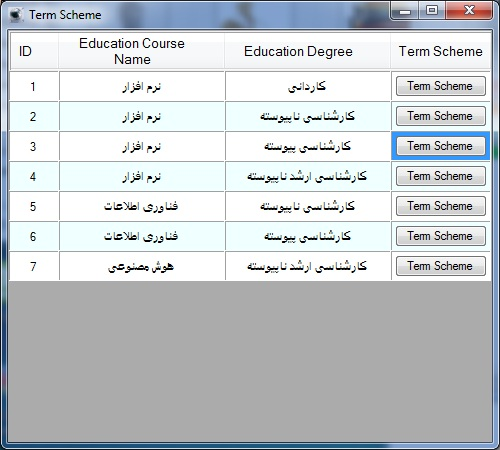
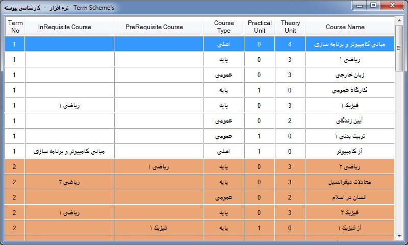

The Term
Scheme relationship between the course and branch. In other words,
shows what courses each Term to what a branch is
presented.
"Term Scheme" form in first shows a list of branches, to
see courses of a branch. click on "Term Scheme" button front of the
branch.

After click on 'Term Scheme' button show this
form:

In this form, courses of each term shown by different
color.